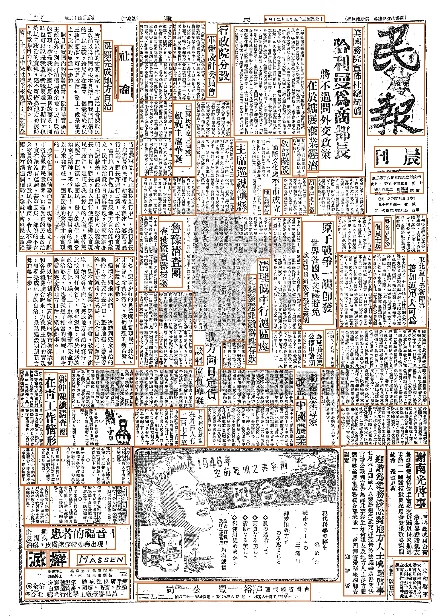
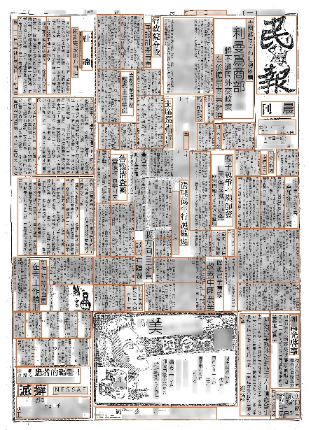
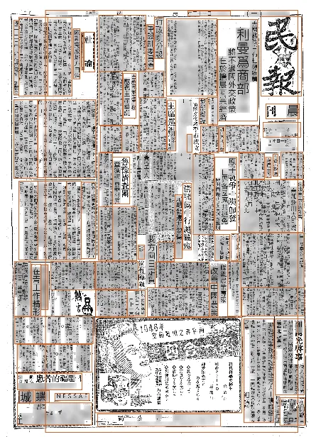
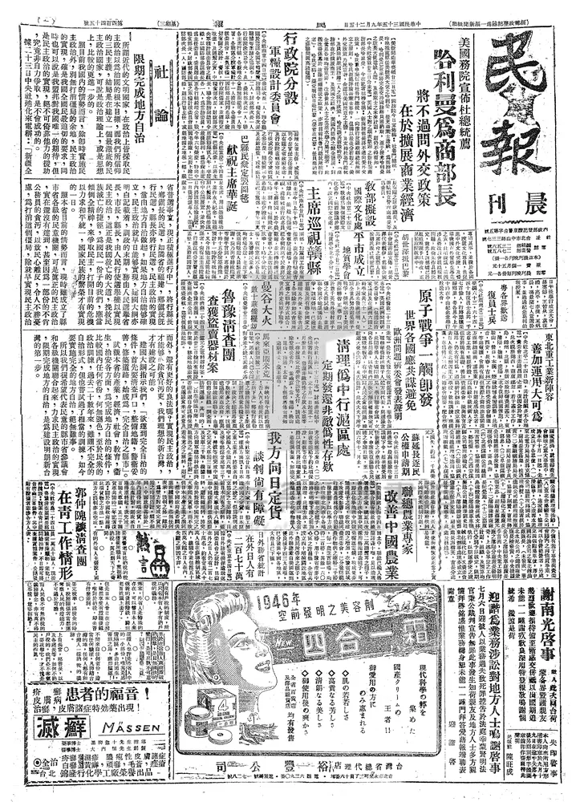
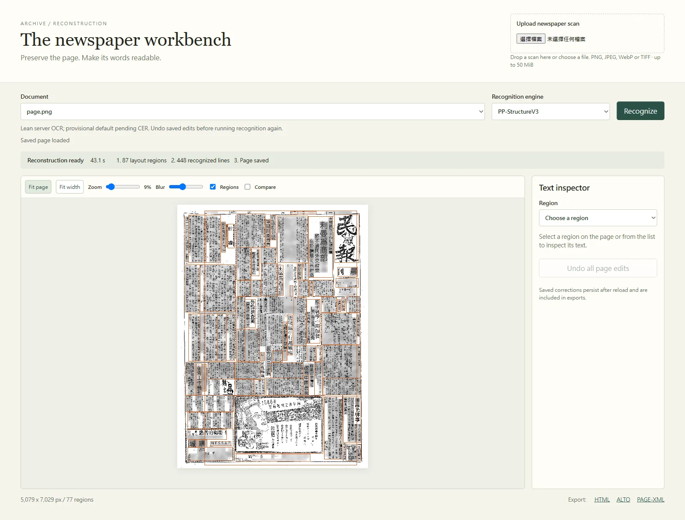
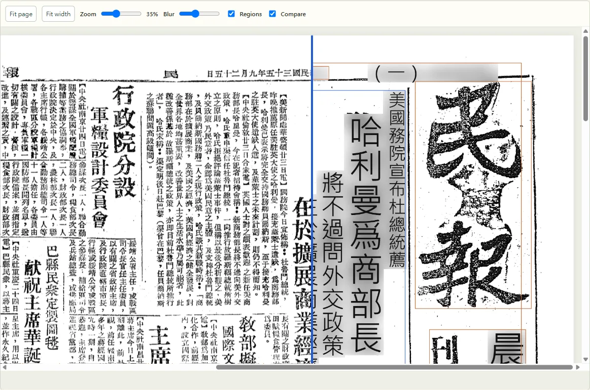
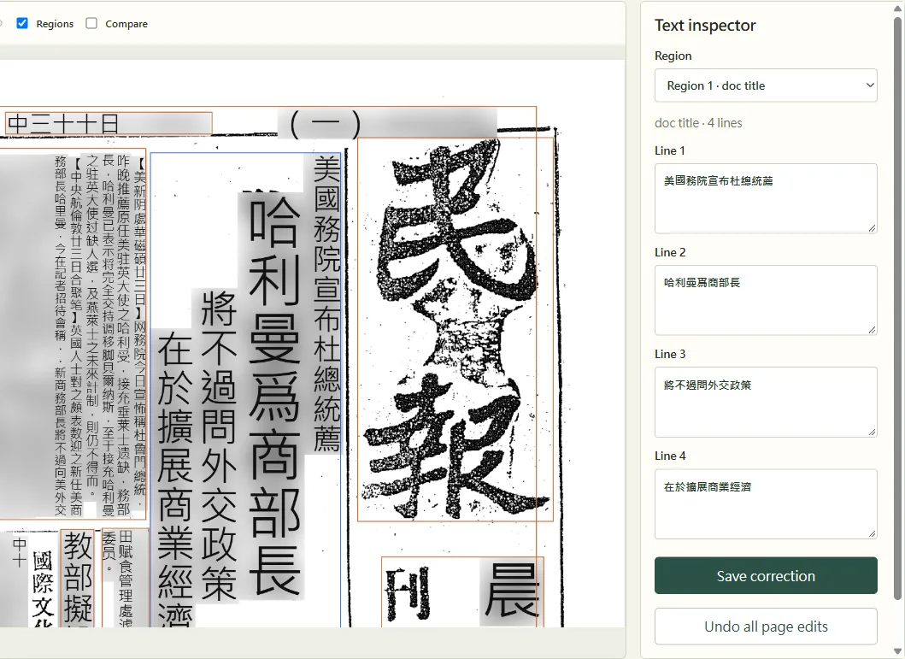
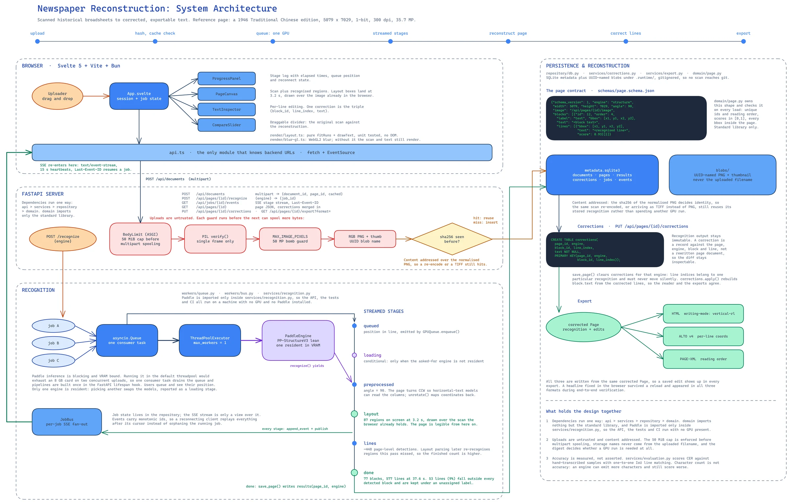

Reconstructing historical newspaper pages
- Type
- Master's capstoneEight weeks, 2026
- Role
- Sole developer: research, design, code, testing and evaluation
- Stack
- PythonFastAPISvelte 5TypeScriptPaddleOCRSQLite
- Status
- Working prototype

Overview
Archives have scanned many old newspapers, but a scan is an image, so nobody can search it or quote from it. I built a web workbench that takes a scanned page, draws its layout regions in about four seconds, reads the text in 35 to 47 seconds, and lets an archivist correct any line before exporting HTML, ALTO v4 or PAGE-XML.



The problem
My test page is 民報 (Min Pao) from 25 September 1946: 5079 × 7029 pixels of dense, vertical Traditional Chinese, read right to left. Standard tools struggle with pages like this.
Columns blend
Off-the-shelf OCR reads across the page and mixes neighbouring columns (Fleischhacker et al., 2025).
Layouts get redrawn
Block detection misses dense columns and tables, so editors redraw them by hand (Schmidt et al., 2024).
Manual work is slow
Transcribing one page of ground truth by hand takes more than 18 minutes (Rahal et al., 2024).
No single automated pipeline links preprocessing, layout detection, OCR and reading order, so archives still correct the output by hand.
Who it is for: archivists and digital-library staff, who need standard formats with page coordinates, and historians, who need text they can search and quote.

What I built
An archivist does everything on one screen, from upload to export.

- Drop in a PNG, JPEG, WebP or TIFF scan of up to 50 MiB.
- Pick an engine, PP-StructureV3 by default or the Traditional Chinese recognizer, and press Recognize.
- The progress bar shows each stage with its elapsed time, and the job's place in the queue.
- The page canvas draws the regions over the scan. It has zoom and a compare slider.
- In the text inspector you can edit and save any line, or undo every edit on the page.
- Export HTML, ALTO v4 or PAGE-XML. The corrections are included.


How it works
Six design decisions shaped the system. Select one to read the detail.
Streaming a pipeline that normally answers once
PP-StructureV3's predict() returns nothing until the whole page is finished. I call its sub-models one at a time and send each stage to the browser as a server-sent event, so layout boxes appear at about three seconds. Every event is written to SQLite before it is sent, so after a reload the browser reconnects to the running job.
queued→loading→preprocessed→layout · ~3 s→lines→done · ~40 s
One queue in front of one GPU
Two server recognizers don't fit on an 8 GB card. Jobs wait in an asyncio.Queue with one consumer and a single executor thread, and anyone waiting sees their place in line. Picking a different engine swaps the models, which the job reports as a loading stage.
Never recognizing the same page twice
The server hashes the normalized PNG with SHA-256. Uploading the same scan again, even re-encoded as a TIFF, returns the stored result in 0.86 seconds instead of spending another 35 to 47 seconds of GPU time.
Reading order for vertical Chinese
The recognizer reads a page turned 90°, so unrotate() maps every box back onto the scan. Each line joins the block that contains its centre, then lines sort right to left and top to bottom. Lines outside every block go into an "unassigned" block, so text the layout stage missed still appears in the output.
# services/normalization.py (excerpt)
def unrotate(angle, w, h):
if angle == 90: # page was turned for the recognizer
return lambda b: [w - b[3], b[0], w - b[1], b[2]]
raise NotImplementedError(f"rotation {angle} not verified")
for box, text, score in zip(boxes, texts, scores):
cx, cy = (box[0] + box[2]) / 2, (box[1] + box[3]) / 2
for raw, blk in zip(d["parsing_res_list"], blocks):
x1, y1, x2, y2 = raw["block_bbox"]
if x1 <= cx <= x2 and y1 <= cy <= y2:
blk["lines"].append(line) # centre inside block
break
else:
orphans.append(line) # kept as "unassigned"
for blk in blocks: # vertical Chinese: right to left, then down
blk["lines"].sort(key=lambda l: (-l["bbox"][2], l["bbox"][1]))Corrections stored as separate records
Each correction is one row keyed by page, engine, block and line. The machine output is never rewritten, every edit can be undone, and all three exports carry the corrected text. In the ALTO export the corrected headline line keeps its 217 × 1357 px box on the original scan.
Every upload is untrusted
A 50 MiB cap applies before multipart parsing, followed by Pillow's verify(), a 50-megapixel limit and a single-frame check. Files are stored under random UUID names, so the uploaded filename is never used on disk. The server runs on premises, so an archive's scans stay on its own machine.
Architecture

| Layer | Tools |
|---|---|
| Interface | Svelte 5 · Vite 7 · TypeScript · Bun |
| Server | FastAPI · Uvicorn · Pillow · Pydantic |
| Recognition | PaddleOCR 3.7 with PP-StructureV3 (Cui et al., 2025) · PaddlePaddle-GPU 3.2 |
| Storage | SQLite through Python's built-in sqlite3 · image blobs |
| Testing | pytest and httpx · bun test · coverage |
| Tooling | uv and Bun lockfiles · Git with Conventional Commits |
Results
Speed
Measured over HTTP on an RTX 5070 Ti workstation. Switching off seven models the page never uses (tables, formulas, seals, charts, dewarping) cut a page from about 8 minutes to 40 seconds with identical output.
Accuracy
Overall character error rate (CER), the edit distance divided by the reference length (Navarro, 2001), was 67.9% against a target below 10%. Where the layout detector separated the columns, on the headline and ordinary news body, CER was about 12%. On dense body text it merged neighbouring columns, those lines never matched the reference, and each counts as fully deleted. A better recognizer wouldn't help there, because the columns are merged before recognition starts.
Character error rate by region
29 reference lines on the 1946 page. Lower is better.
Show the chart as a table
| Region | CER | Note |
|---|---|---|
| Headline | 12.0% | Layout separated correctly |
| News body | 12.1% | Layout separated correctly |
| Notice | 63.6% | Partly matched |
| Dense body | 100% | Columns merged, no line matched |
| Overall | 67.9% | 178 errors over 262 reference characters; 12 of 29 lines matched |
The 29 reference lines were transcribed by an AI assistant and no person has checked them yet, so treat these figures as indicative.
Testing
PS> uv run pytest
tests\test_api.py .... tests\test_repository.py ..
tests\test_domain.py .. tests\test_services.py ...
tests\test_evaluation.py ..
============ 13 passed, 1 warning in 0.90s ============
PS> cd frontend; bun test
5 pass 0 fail 89410 expect() calls
coverage: 85% of back-end statementsA fake engine stands in for the GPU, so the whole suite runs on any machine. A white-box test caught a real bug: the "unassigned" block took its id from len(blocks), which can collide with an existing id. The test fails under that rule and passes with max(id) + 1.
The fake engine also hid a problem that only the end-to-end run on real hardware showed: while a page is being recognized, the API sometimes stalls for seconds.
API response time during one recognition run
One dot per request, log scale. Hover over the chart, or focus it and use the arrow keys, to read each request.
Show the requests as a table
| Sent at (s) | Response time | Stage running |
|---|
Lessons and next steps
What I learned
- Measure the whole system early. The API stalls only showed up on real hardware, after the unit tests had passed.
- Judge output against a reference transcription. The configuration that produced the most characters scored worse, because some of them were hallucinated on areas with no text.
- Keep GPU code behind one module. That let me build and test most of the system on machines without a GPU.
Next steps
- Split merged columns by fine-tuning the layout model on synthetic vertical pages, or by cutting regions along the whitespace between columns
- Build a larger, human-checked ground truth with region boxes and reading order
- Run recognition in a separate process so it can't block the API
- Fix the interface issues from a heuristic review (Nielsen, 1994), then run a study with archivists
- Build a GPU container image and add logins and multi-page documents
References
Cui, C., Sun, T., Lin, M., Gao, T., Zhang, Y., Liu, J., Wang, X., Zhang, Z., Zhou, C., Liu, H., Zhang, Y., Lv, W., Huang, K., Zhang, Y., Zhang, J., Zhang, J., Liu, Y., Yu, D., & Ma, Y. (2025). PaddleOCR 3.0 technical report (arXiv:2507.05595). arXiv. https://doi.org/10.48550/arXiv.2507.05595
Fleischhacker, D., Kern, R., & Göderle, W. (2025). Enhancing OCR in historical documents with complex layouts through machine learning. International Journal on Digital Libraries, 26(1), Article 3. https://doi.org/10.1007/s00799-025-00413-z
Navarro, G. (2001). A guided tour to approximate string matching. ACM Computing Surveys, 33(1), 31–88. https://doi.org/10.1145/375360.375365
Nielsen, J. (1994, April 24). 10 usability heuristics for user interface design. Nielsen Norman Group. https://www.nngroup.com/articles/ten-usability-heuristics/
Python Software Foundation. (n.d.). Global interpreter lock. In Python glossary. Retrieved October 5, 2026, from https://docs.python.org/3/glossary.html#term-global-interpreter-lock
Rahal, N., Vögtlin, L., & Ingold, R. (2024). Approximate ground truth generation for semantic labeling of historical documents with minimal human effort. International Journal on Document Analysis and Recognition, 27(3), 335–347. https://doi.org/10.1007/s10032-024-00475-w
Schmidt, T., Kamlah, J., & Weil, S. (2024). Reichsanzeiger-GT: An OCR ground truth dataset based on the historical newspaper "Deutscher Reichsanzeiger und Preußischer Staatsanzeiger" (German Imperial Gazette and Prussian Official Gazette) (1819–1945). Data in Brief, 54, Article 110274. https://doi.org/10.1016/j.dib.2024.110274